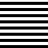

9. Analysis
Commands in the Analysis menu:
 | Lists the attributes of one or more entities. → |
Determine geometric information. → | |
Check the continuity at transitions between curves and faces. → | |
Get information about local curvature attributes of a face or a curve. → | |
Display a curvature plot to visually check the curvature or curvature radius course of curves and boundaries. → | |
Writes information on the Output tab. → | |
  | Show the ‘Info’ tab to display a message. → |
Analyze the warnings detected when opening or inserting. → | |
 | Create boundary entities. → |
 | Use rules to find and handle identical entities. → |
 | Check the quality of entities and repair specific data. → |
 | Analyze draft angles and the splitting process. → |
 | Look for undercut areas in the geometry. → |
 | Analyze the curvature and radii of faces and meshes. → |
Analyze the radii of faces and meshes in relation to a sphere diameter. → | |
 | Analyze distances between two faces, meshes or face groups in a context. → |
 | Display entities and their matings determined by constraints between them and highlight in the model tree. → |
Project a vertical pattern onto the entities for the analysis of the face transitions. → → | |
 | Project a horizontal pattern onto the entities for the analysis of the face transitions. → → |
Stop the projection of the pattern. → → | |
Select a bitmap image file for a spherical reflection on the model. → → | |
Stop the reflection of image information on the model. → → |